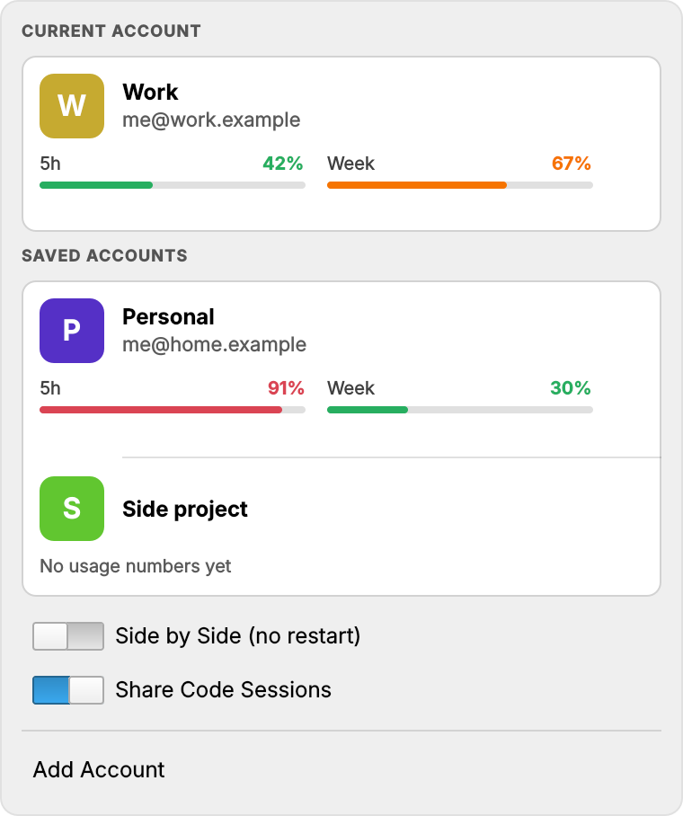

Clauds is a KDE Plasma system tray app for the Claude desktop app on Linux. It keeps one Claude data folder per account, so a switch takes one click and no account is ever signed out. No more email codes every time you go from work to personal.

Clauds sits in the system tray and does the folder juggling for you. It never reads your passwords, tokens or cookies.
Click an account in the panel or the tray's quick menu. Claude closes and opens again with that account, still signed in.
Run one Claude copy per account at the same time, with no restart. A green dot shows which accounts are open.
Start a Code session with one account and continue it with another. All accounts use the same session files.
See the 5-hour, weekly and per-model limits of every account with their reset times, refreshed every 2 minutes.
At 90% of a limit, Clauds can move to the account with the most room. It asks first, or switches by itself. Off by default.
A StatusNotifierItem tray icon, KDE notifications and the colors of your color scheme. Local only: no server, no telemetry.
For KDE Plasma 6 with Claude Desktop for Linux installed.
Clauds is an early version (0.x): make a backup of ~/.config/Claude before your first switch.
sudo curl -fsSLo /usr/share/keyrings/clauds-archive-keyring.gpg \
https://products.lemche.net/clauds-kde/apt/clauds-archive-keyring.gpg
sudo curl -fsSLo /etc/apt/sources.list.d/clauds.sources \
https://products.lemche.net/clauds-kde/apt/clauds.sources
sudo apt update && sudo apt install claudsPrefer to build it yourself? Build the .deb from source on Kubuntu:
git clone https://github.com/LemcheNET/clauds-kde.git
cd clauds-kde
make deps && make test && make installSee the README for every option.
~/.config/Claude and
~/.local/share/clauds. It never opens, copies or stores passwords, tokens or cookies.claude.ai, for the chat windows and the live usage numbers. There is no update check,
no analytics and no telemetry.~/.claude keeps its own login.sudo apt remove clauds.
The uninstall steps explain why the order matters.